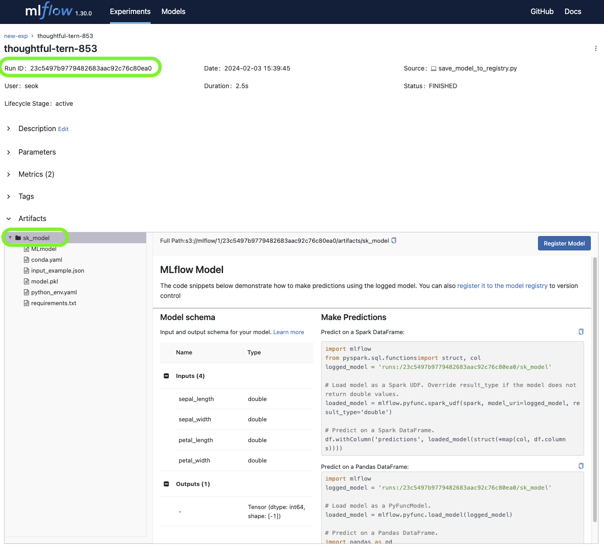
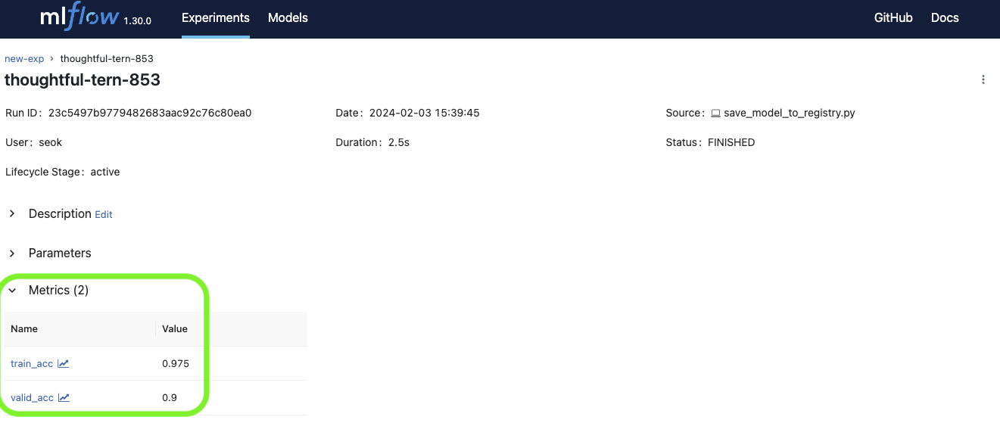
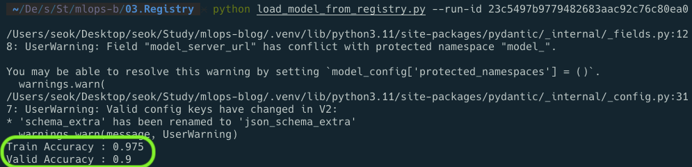

MLOps for MLE - 8
mlops
MLflow 서버에서 모델 불러오기
Summary
- MLflow 서버에 저장된 모델을 불러오는 스크립트 작성
Note
실습을 진행했던 코드를 보고싶으시다면 여기를 눌러주세요
실습
1. 모델 불러오기
day 7 에서 작성한 코드로 학습된 모델을 서버로부터 불러오는 코드를 작성함
1.1 환경 변수 설정
day 7 에서와 같이 MLflow 서버에 접근하기 위한 환경 변수 설정
1.2 모델 불러오기
sklearn 모델 불러오기
mlflow.sklearn.load_model 함수를 사용해서 저장된 모델을 불러옴
run_id 와 모델을 저장할 때 설정했던 모델 이름을 받을 수 있도록 외부 변수 설정
parser = ArgumentParser()
parser.add_argument("--run-id", dest="run_id", type=str)
parser.add_argument("--model-name", dest="model_name", type=str, default="sk_model")
args = parser.parse_args()위에서 받은 변수를 이용해 runs:/run_id/model_name 의 형식으로 문자열을 만들어 줌
model_pipeline = mlflow.sklearn.load_model(f"runs:/{args.run_id}/{args.model_name}")
이 때, pyfunc 로도 모델을 불러올수있음
mlflow.pyfunc.load_model 을 사용 -> mlflow.pyfunc.PyFuncModel 클래스로 불러와짐
model_pipeline = mlflow.pyfunc.load_model(f"runs:/{args.run_id}/{args.model_name}")
2. inference 코드를 작성하고 마무리하면 전체 코드는 다음과 같음
# load_model_from_registry.py
import os
from argparse import ArgumentParser
import mlflow
import pandas as pd
from sklearn.metrics import accuracy_score
from sklearn.model_selection import train_test_split
# 0. set mlflow environments
os.environ["MLFLOW_S3_ENDPOINT_URL"] = "http://localhost:9000"
os.environ["MLFLOW_TRACKING_URI"] = "http://localhost:5001"
os.environ["AWS_ACCESS_KEY_ID"] = "minio"
os.environ["AWS_SECRET_ACCESS_KEY"] = "miniostorage"
# 1. load model from mlflow
parser = ArgumentParser()
parser.add_argument("--model-name", dest="model_name", type=str, default="sk_model")
parser.add_argument("--run-id", dest="run_id", type=str)
args = parser.parse_args()
model_pipeline = mlflow.sklearn.load_model(f"runs:/{args.run_id}/{args.model_name}")
# 2. get data
df = pd.read_csv("data.csv")
X = df.drop(["id", "timestamp", "target"], axis="columns")
y = df["target"]
X_train, X_valid, y_train, y_valid = train_test_split(X, y, train_size=0.8, random_state=2022)
# 3. predict results
train_pred = model_pipeline.predict(X_train)
valid_pred = model_pipeline.predict(X_valid)
train_acc = accuracy_score(y_true=y_train, y_pred=train_pred)
valid_acc = accuracy_score(y_true=y_valid, y_pred=valid_pred)
print("Train Accuracy :", train_acc)
print("Valid Accuracy :", valid_acc)3. 실행 결과
localhost:5001 에 접속하여 저장된 모델의 run 을 클릭하여 run_id 와 model_name 을 확인

run_id 및 model_name 확인python load_model_from_registry.py --model-name "sk_model" --run-id "RUN_ID"
에 값을 넣어서 실행
MLflow 서버의 metrics 를 확인하여 학습했던 결과와 같은지 확인

